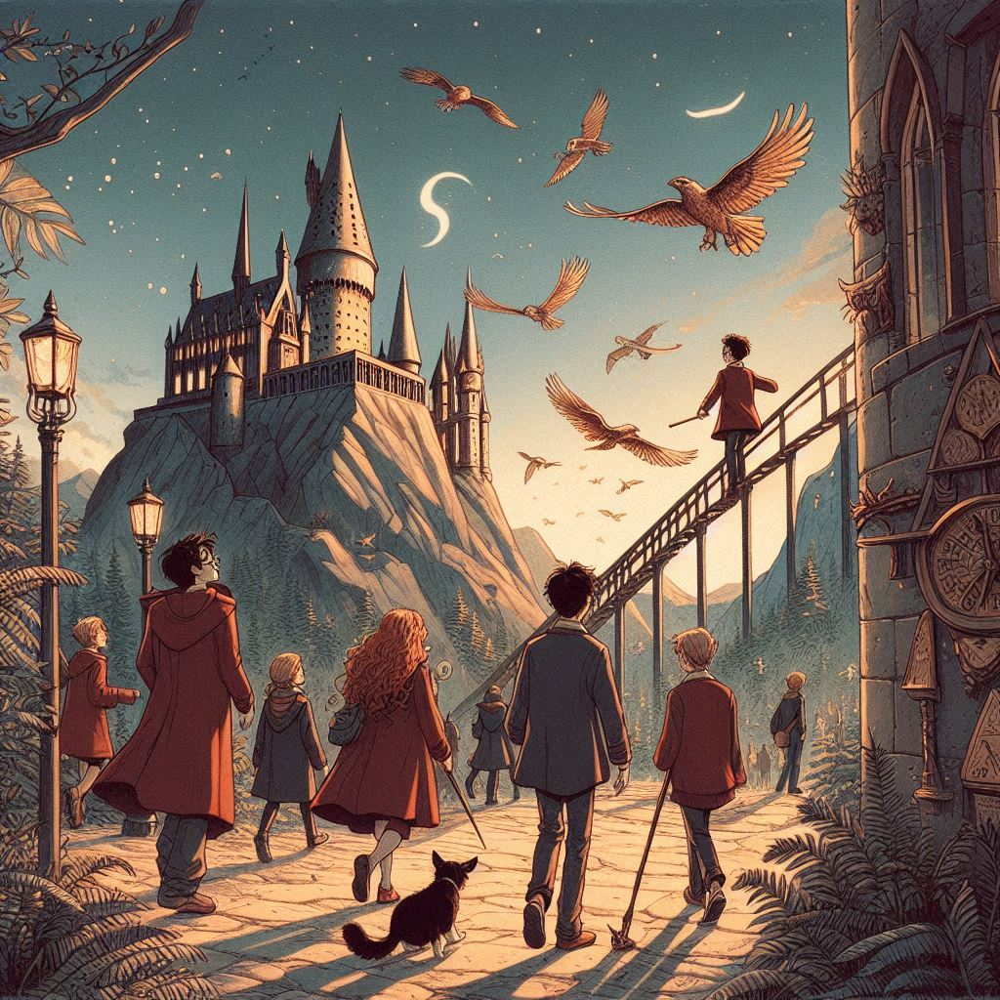

해리포터
목차
작가
J. K. 롤링
출판일
1997년
감상평에 대한 AI그림
영화를 먼저 접하고 책을 읽게 되었는데, 영화에 담지 못한 이야기까지 알게되니 등장인물이 더욱 입체적으로 다가왔다.
어차피 주인공은 해리라고 못을 박아두지 않고, 네빌이 이 이야기의 주인공이 될 수도 있었을 가능성을 남겨두어서 주인공이란 역할은 딱 잘라서 말할 수 없다는 것처럼 느껴져서 인상 깊었다.
무조건적인 악역, 악하지만은 않은 악역, 선하지만은 않은 조력자 등 해리가 호그와트에서 마법을 배우고 성장하는 과정에서 만나는 인물들의 성격이 다양해서 좋았다. 특히 인물이 본인의 용기를 내보일 때가 인상적이었다.

감상평에 대한 AI 감정 평가
이 감상평은 다음의 감정을 중심으로 구성되어 있습니다.
✨ 감탄과 경외: 해리포터 영화와 책을 비교하면서 등장인물들이 더욱 입체적으로 다가오는 점에 감탄하며, 작품에 대한 깊은 인상을 표현하고 있습니다.
✨ 공감과 내면적 성찰: 주인공이 해리뿐만 아니라 네빌이 될 수도 있었던 가능성, 그리고 다양한 인물들이 선과 악의 경계를 넘나드는 모습을 통해 독자가 자신의 상황에 대입하여 공감하는 감정을 드러냅니다.
✨ 다양성과 성장: 호그와트에서 해리가 만나는 다양한 인물들이 가지는 성격과 역할의 다채로움, 특히 본인의 용기를 내보이는 장면들에서 인물들의 성장과 변화를 이해하려는 태도가 담겨 있습니다.